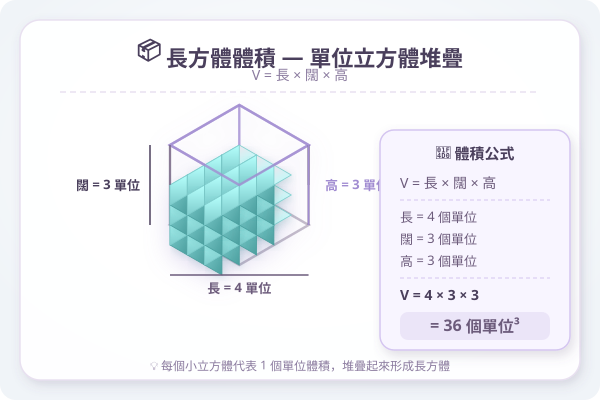

| # | Question | 答案 | 類型 |
|---|---|---|---|
| 1 | 一個長方體長 8 cm、闊 5 cm、高 4 cm，Volume是多少 cm3？ | ___ | manual |
| 2 | 8000 cm3 = ？L（複習） | ___ | manual |
| 3 | 容器的底Area是 200 cm2。水的高度上升了 3 cm。水的Volume增加了多少 cm3？ | ___ | manual |
| 4 | 一個正方體的邊長是 10 cm，Volume是多少？表Area是多少？（複習） | ___ | manual |
| 5 | 2.5 L = ？cm3（單位換算複習） | ___ | manual |
| 例1 | 一個長方體魚缸長 30 cm、闊 20 cm、高 25 cm。求魚缸的容量（以L為單位）。 | ___ | manual |
| 例2 | 一個正方體水箱邊長 40 cm，可盛水多少L？ | 64000 cm³ | auto |
| 例3 | 水箱底Area 300 cm2，原有水深 12 cm。放入石頭完全浸沒後，水深升至 16 cm。求石頭Volume。 | ___ | manual |
| 例4 | 一個正方體水箱邊長 20 cm，原有水深 10 cm。放入一金屬塊後，水深變成 14 cm。金屬塊的Volume是多少？ | 8000 cm³ | auto |
| 例5 | 一個長方體容器長 25 cm、闊 16 cm，內有水。放入一塊石頭後，水面上升 3.5 cm。石頭的Volume是多少 cm3？ | ___ | manual |
| 例6 | 水箱底Area 250 cm2。放入石頭前水深 20 cm，放入後水深 20 cm（石頭未完全浸沒）。能否直接用排水法求Volume？ | ___ | manual |
| 7 | 長方體容器長 25 cm、闊 18 cm、高 20 cm。現有水高 16 cm。放入一塊 1200 cm3 的石頭，水會溢出嗎？ | ___ | manual |
| 8 | 容器底Area 360 cm2，高 30 cm。現有水高 25 cm。放入物體Volume 2000 cm3。溢出多少 cm3 的水？ | ___ | manual |
| 9 | 水箱長 40 cm、闊 25 cm、高 30 cm，裝滿了水。放入一塊石頭後，溢出 800 cm3 的水。石頭的Volume至少是多少？ | ___ | manual |
| 10 | 一個正方體水箱邊長 15 cm，盛了 34 滿的水。放入一塊 600 cm3 的石頭。水會溢出嗎？（提示：先計現有水量） | 3375 cm³ | auto |
| 11 | 水箱底Area 480 cm2，原有水深 15 cm。先放入一塊 1440 cm3 的物體A，再放入一塊 960 cm3 的物體B。最終水深是多少？ | ___ | manual |
| 12 | 水箱底Area 300 cm2，原有水深 20 cm，內有石頭一塊（Volume 900 cm3）。先取出石頭，水面變為多少cm？再放入一塊 1200 cm3 的金屬，最終 | ___ | manual |
| 13 | 水箱底Area 250 cm2，原有水深 30 cm。放入5個完全相同的小球後，水面上升了 4 cm。每個小球的Volume是多少？ | ___ | manual |
| 14 | 水箱底Area 400 cm2。放入石頭前水深 10 cm，放入後水深 13 cm。石頭Volume是多少？ | ___ | manual |
| 15 | 一個正方體容器邊長 12 cm，原有水深 8 cm。放入一個鐵球完全浸沒後，水面上升 3 cm。鐵球Volume是多少？ | 1728 cm³ | auto |
| 16 | 長方體魚缸長 50 cm、闊 30 cm、高 40 cm。現有水高 30 cm。魚缸還有多少cm3 的剩餘空間？ | ___ | manual |
| 17 | 容器長 30 cm、闊 20 cm、高 25 cm。現有水高 18 cm。放入一塊Volume 3500 cm3 的石頭。問水會否溢出？如果溢出，溢出多少 mL？ | ___ | manual |
| 18 | 水箱底Area 600 cm2，原有水深 15 cm。先取出一個 1800 cm3 的石頭，再放入一個 2400 cm3 的金屬塊。最終水深比原來上升還是下降？變化 | ___ | manual |
| 19 | 一個長方體容器長 24 cm、闊 15 cm。放入10個相同大小的波子後，水面上升了 5 cm。每粒波子的Volume是多少？ | ___ | manual |
| 20 | 水箱底Area 500 cm2，高 35 cm。原有水深 28 cm，內有一塊Volume未知的石頭A。取出石頭A後，水面下降至 24 cm。問：(a) 石頭A的Volume是多少 | ___ | manual |
| 21 | 容器A（長30cm闊20cm高25cm）原有水深18cm。容器B（長25cm闊20cm高30cm）原有水深22cm。將容器A裡的一塊石頭（Volume1500cm3）取 | ___ | manual |
| 22 | 一個長方體水箱底Area 800 cm2，原有水高 20 cm。放入一塊長方體磚（長 15 cm、闊 10 cm、高 8 cm）完全浸沒。水面上升了多少？若磚的高度 | 8000 cm² | auto |
| 23 | 一個Circle柱形水箱（底Area 314 cm2）原有水深 15 cm。放入一塊不規則石頭完全浸沒後，水深變為 19 cm。石頭Volume是多少？（π 取 3.14） | ___ | manual |
| 24 | 水箱長 40 cm、闊 30 cm、高 50 cm，原有水深 35 cm。依次放入A、B、C三塊石頭（Volume分別為 3000、2500、4500 cm3）。問放入 | ___ | manual |
| 25 | 一個長方體魚缸長 60 cm、闊 40 cm、高 50 cm，原有水高 35 cm。小明放入一塊大石頭（完全浸沒），水面上升至 42 cm。石頭的Volume是多少 c | ___ | manual |
| 26 | 一個正方體水箱邊長 30 cm，裝滿了水。放入一塊石頭後，溢出 2.7 L 的水。問石頭的Volume至少是多少 cm3？石頭有沒有完全浸沒？（試繪圖解釋） | 27000 cm³ | auto |
| 27 | 一個長方體儲水箱長 80 cm、闊 50 cm、高 60 cm，原有水高 45 cm。大雨後，雨水令水面再升高 8 cm（不溢出）。雨水增加了多少 L？ | ___ | manual |
| 28 | 一個容器長 45 cm、闊 30 cm、高 35 cm。現有水深 25 cm。放入一個長方體鐵塊（長 15 cm、闊 10 cm、高 12 cm）完全浸沒。(a | ___ | manual |
| 29 | 水箱A（底Area 600 cm2）有水深 30 cm。水箱B（底Area 400 cm2）有水深 15 cm。從水箱A取出一塊石頭（Volume 3000 cm3）放入水箱B | ___ | manual |
| H1 | 水箱底Area 350 cm2，放入石頭前水深 12 cm，放入後水深 16 cm。石頭Volume是多少？ | ___ | manual |
| H2 | 正方體容器邊長 18 cm，原有水深 10 cm。放入金屬塊後水面升至 15 cm。金屬塊Volume是多少？ | 5832 cm³ | auto |
| H3 | 容器長 35 cm、闊 25 cm、高 30 cm，原有水深 22 cm。放入 1800 cm3 的石頭，水會溢出嗎？ | ___ | manual |
| H4 | 水箱底Area 450 cm2，原有水深 18 cm。先取出一個 1350 cm3 的物體，再放入一個 2250 cm3 的物體。最終水深是多少？ | ___ | manual |
| H5 | 2500 mL = ？cm3 = ？L（單位換算） | ___ | manual |
| H6 | 水箱長 50 cm、闊 40 cm、高 35 cm，原有水深 28 cm。放入一塊 6000 cm3 的石頭。(a) 水會溢出嗎？(b) 如果溢出，溢出多少 L | ___ | manual |
| H7 | 有兩個水箱：A（底Area 500 cm2，水深 20 cm）和 B（底Area 300 cm2，水深 10 cm）。從A取出一塊石頭（Volume 2500 cm3）放入B。 | ___ | manual |
| H8 | 一個長方體水箱，長是闊的2倍，高是闊的1.5倍。若闊為 20 cm，水箱裝了 35 滿的水。放入一塊石頭後，水面升至離箱頂 2 cm。石頭Volume是多少？ | ___ | manual |
LF Academy · LF Academy · 自動答案生成器 v1.0 · 手動Question請老師覆核